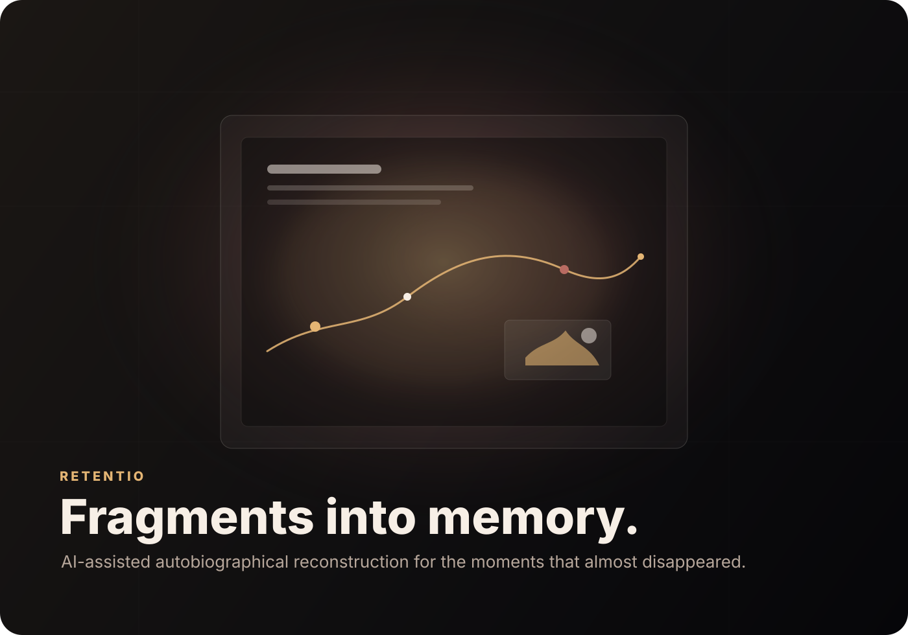
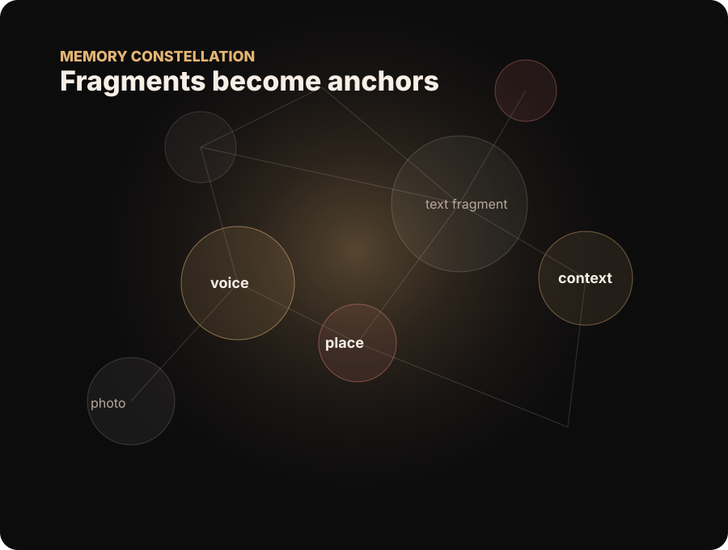
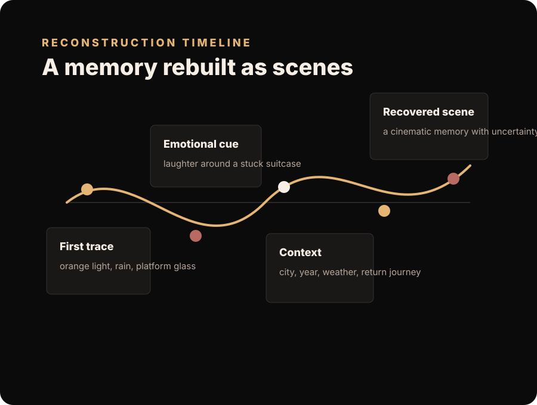
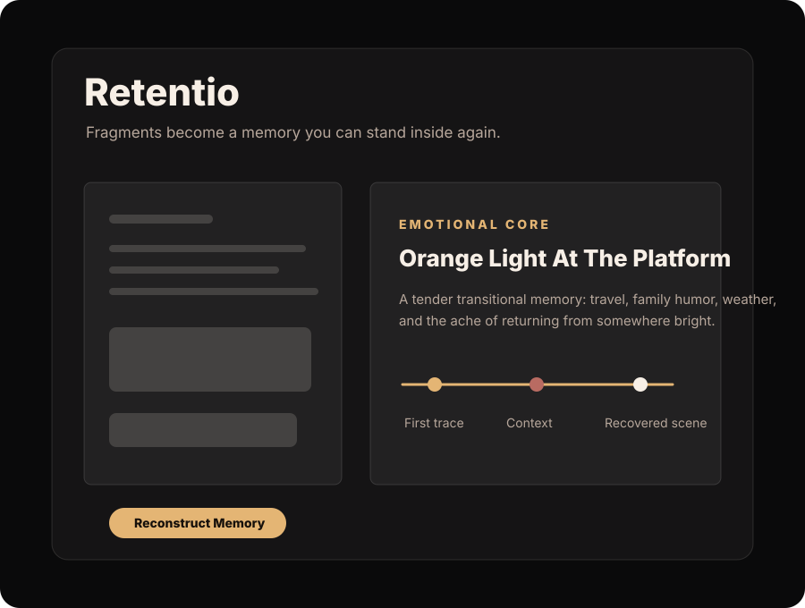

AI autobiographical memory reconstruction
Retentio
A cinematic memory engine that turns scattered traces into emotional timelines: photos, notes, voice fragments, and contextual search becoming a moment you can almost step back into.
01Upload traces
02Recover context
03Rebuild memory

Visual System

Fragments become a constellation of emotional and contextual anchors.

The memory engine arranges moments into a careful cinematic timeline.

A dark, minimal interface that keeps attention on the remembered scene.
INPUT
Life Traces
Photos, notes, dates, voice, places, and unfinished details.
SEARCH
Context
Tavily enriches the scene with local, cultural, and historical cues.
AI
Reconstruction
OpenAI turns fragments into a grounded emotional timeline.
OUTPUT
Memory
A cinematic summary that preserves uncertainty while restoring feeling.